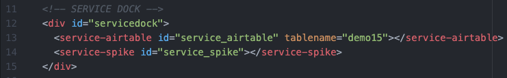
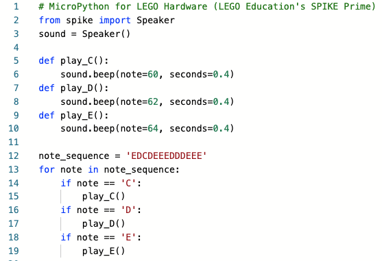

Service Dock
The local page has both the Airtable Service Dock element (make sure to update the tablename attribute to match your table name). There is also a single SPIKE Prime Service Dock element.
Local Interface
The local page is only monitoring the "notes" value; when it changes, it downloads the code into the SPIKE Prime, replacing the "REPLACE[cloud_current]" with the sequence of notes to play.
The reset clears the notes value in the cloud, so that the user can activate it again from the remote interface.

This is how the interface will look on the Local Page:

Note: to develop the code I used CodingRooms to write the code, using test values for the sequence of notes (and only adding functions for three notes; so a whole scale isn't yet supported). Then when I moved the code from CodingRooms over to my webpage, I then replaced the sequence of notes value with the "REPLACE[cloud_current]" value to be replaced.
